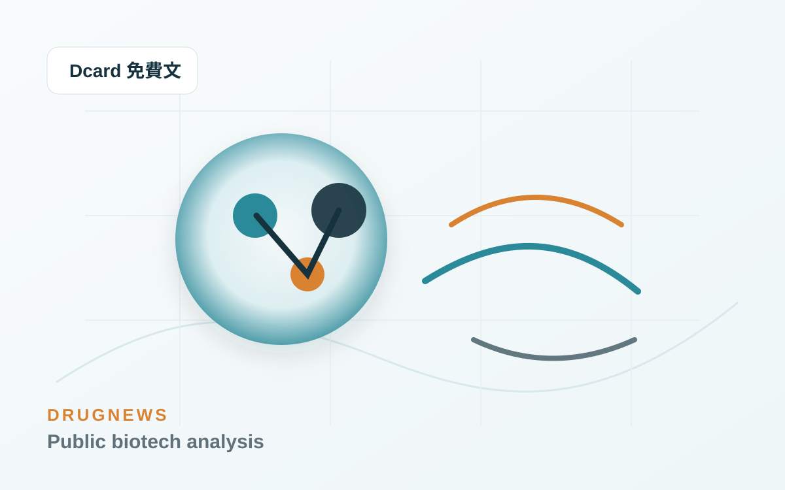
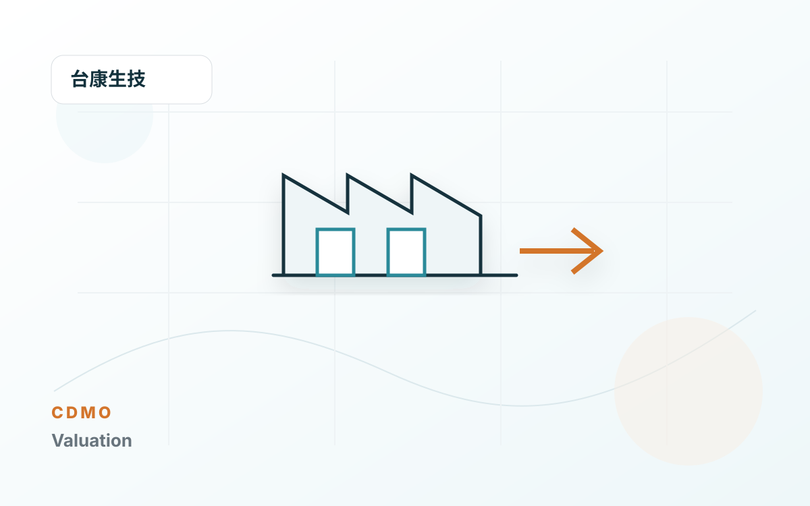

文章歸檔
2026 年 5 月文章
本月共 44 篇 Drugnews 分析，依時間倒序呈現。

為什麼生技新聞不能只看成功或失敗？真正該問的是 5 個估值參數
生技新聞不能只分利多利空。真正要問的是：成功率、上市時間、患者池、峰值銷售、風險折現，哪個估值參數真的被改變了。

【會員研究包】藥華藥 ET 現在該怎麼估值？從 PDUFA 到第二成長曲線重算
藥華藥 ET 進入 PDUFA 倒數後，估值該重算哪幾個參數？這篇拆解成功率、上市時間、峰值銷售與折現率哪些能上修，哪些還不能先算滿。

【會員研究包】近期臨床進展該怎麼重算估值？藥華藥 ET 與中裕 TMB-365/380 兩個對照案例
很多公司簡報聽完，市場第一個反應往往不是「哪個估值參數變了」，而是「管理層今天講得很有信心」。 這其實很危險。 因為簡報的任務，本來就不是替投資人做估值，而是替公司整理出一套最有利的敘事順序。 所以對我來說，簡報後真正要做的事，不是把投影片重抄一遍，而是立刻回答一個問題：

公司簡報不能只抄重點：真正要聽的是公司沒說清楚什麼
聽生技公司簡報時，重點不是把公司想說的故事抄下來，而是判斷哪些假設、風險與估值參數還沒有被說清楚。

OX2R 爆紅：從發作性嗜睡症，到下一代 CNS 藥物想像空間
OX2R 爆紅：從發作性嗜睡症，到下一代 CNS 藥物想像空間 中樞神經系統藥物開發，很久沒有出現一個這麼清楚、這麼有生物學邏輯、又這麼接近臨床突破的靶點。 這個靶點就是 Orexin Receptor 2（OX2R）。 如果只用一句話解釋 OX2R 的重要性，它不是單純讓人「比較不想睡

Tavneos 危機：20 例死亡通報、資料完整性疑雲，Amgen 罕病明星藥站上撤市邊緣
Dcard 免費文章，從死亡通報與資料完整性疑雲，理解罕病藥物安全性事件如何影響商業價值。
藥王的最佳搭檔？療效翻倍！
Dcard 免費文章，從藥物組合與療效加乘的角度，拆解新藥競爭不只看單一產品。
減重藥物不只看體重了：下一代療法正在瞄準這些方向
Dcard 免費文章，整理下一代減重療法如何從體重下降，延伸到肌肉、脂肪肝與代謝共病。

減重藥物不只看體重了：下一代療法正在瞄準這些方向
減重藥物不只看體重了：下一代療法正在瞄準這些方向 肥胖治療正在成為全球創新藥研發中最重要的戰場之一。 過去，市場討論減重藥物，焦點多半放在一件事：能瘦多少？ 但現在，這個問題已經不夠用了。隨著 Wegovy（semaglutide）、Ozempic（semaglutide）、Mou

台康生技不是純 CDMO：Herwenda、Sandoz 和 420 mg vial 到底該怎麼估？
台康不是純 CDMO，也不是典型新藥股。真正要拆的是 CDMO 製造底座、Herwenda 商業化選擇權與後續 biosimilar 平台重複性。

無針注射不是噱頭：從怕打針，到下一代藥物遞送平台
很多人對打針都有陰影。 輕一點的是緊張、皺眉、轉頭不看；嚴重一點的，甚至會暈針、冒冷汗、心跳加快。但很現實的是，人這一生幾乎很難完全逃過注射：疫苗、胰島素、局部麻醉、皮下注射藥物、醫美療程，或某些慢性病長期給藥，都可能需要針頭。 所以，無針注射這個技術乍聽之下很像噱頭。 但它並不是「隔空打針」
減肥藥新副作用，意外帶出新賽道？
Dcard 免費文章，從減肥藥安全性與副作用訊號延伸，觀察新適應症與下一波研發題材。

台灣生技估值第一步：不要把所有公司都塞進同一個本益比
台灣生技股最常見的錯誤，不是模型算錯一點，而是公司類型一開始就分錯。
太陽製藥、梯瓦製藥 與 全球學名藥廠的轉型焦慮
Dcard 免費文章，觀察全球學名藥廠面對價格壓力、產品組合與轉型路線時的商業困境。

藥時事會員版：不是更多新聞，是一套生技醫藥判斷系統
這篇是藥時事會員版的產品介紹。 如果你是從 FB、爆料同學會或朋友轉貼進來，先講清楚： 藥時事會員版不是明牌。 也不是每日醫藥新聞摘要。 我想做的是一套給台灣讀者看的生技醫藥基本面判斷系統。 為什麼需要這個會員版 生技醫藥新聞很多。 但真正困難的不是知道發生了什麼，而是判斷： 這

創新藥的品味：真正的 BD，不只是把藥賣出去，而是看懂病人、疾病與全球市場
AI 時代留給人類的東西，可能只剩下三件事：品味、勇氣，還有價值觀。 更精準地說，價值觀其實也包含在品味裡。 因為品味不是美感而已。品味是一個人如何選擇問題、如何判斷價值、如何決定把有限資源下注在哪裡。勇氣則是當你看見一個尚未被共識承認的方向時，仍然願意承擔失敗風險，往前走。 在投資如此，在創

BD 找標的，不是看故事，而是先算帳：如何量化一條管線到底值不值得買？
每一次 BD 決策，本質上都不是「多買一條管線」這麼簡單。 它其實是在決定公司未來幾年的資金流向、研發資源分配、利潤結構，甚至是整條估值曲線。 很多公司做 BD 時，嘴上說的是「補強產品線」、「布局新技術」、「增加策略協同」，但真正進到內部審查時，常常發現問題很大：資產看起來很漂亮，但買不起；科
氣喘新藥正在換檔：從吸入三合一到上游免疫靶點
Dcard 免費文章，從氣喘治療的產品型態與免疫靶點切入，理解呼吸道疾病新藥的商業化方向。

氣喘新藥正在換檔：從吸入三合一到上游免疫靶點
氣喘是全球最常見的慢性呼吸道疾病之一，也是醫學上仍難以「根治」的疾病。WHO 估計，2019 年全球約有 2.62 億名氣喘患者，並造成約 45.5 萬人死亡；若採用較早期的全球估算，患者人數甚至可達 3.39 億。這不只是過敏體質或空氣品質的生活議題，也是一條正在被國際大藥廠重新定義的創新藥賽道。

全球生技大浪來襲：看懂五兆減肥藥的主升段與科學定價
當台灣資本市場的資金與目光被 AI 半導體全面虹吸時，全球生技產業正悄悄用另一種方式重新定義人類的未來——那就是減肥藥的瘋狂狂潮。 我們多次提到，AI 解決的是算力與效率問題，而生技醫療解決的是疾病與生命問題。這不是一場資源的對立，而是台灣必須並行的雙引擎。如果說 AI 半導體是矽基生產力的極致，

這些中型 Biotech，正在把「重磅炸彈藥物」從夢想變成現金流
在很長一段時間裡，製藥業的 blockbuster drug，似乎是大型藥廠的專屬勳章。 年銷售額突破 10 億美元，代表的不只是產品好賣，而是公司必須同時具備臨床開發能力、法規溝通能力、保險給付能力、醫師教育能力、銷售組織能力，以及後續適應症擴張能力。 這些資源過去多半掌握在大型跨國藥廠手中。

【基本面系列】藥華藥合理估值是多少？
藥華藥 台灣生技股王市，值站到 3,000 億台幣，到底還有多少是基本面，多少是預付未來？ 藥華藥是少數已經走到全球銷售、營收放大、獲利兌現的公司。 2025 年藥華藥合併營收約 NT$156 億，稅後淨利約 NT$50 億，EPS 13.64 元。2026 年第一季營收約 NT$51 億，EP
破紀錄 AI 製藥融資來了！Google 系公司一次募 21 億美元
Dcard 免費文章，討論 AI 製藥大型融資如何改變市場對藥物研發平台與資本效率的想像。

第一三共最貴的一課：ADC 熱潮裡，產能也可能變成風險資產
在 ADC 賽道一路高歌猛進的 Daiichi Sankyo，正在為過去幾年的激進擴產付出代價。 這件事很值得台灣生技產業仔細看。 因為它表面上是一家日本大型藥廠的財務調整，實際上卻是一堂非常昂貴的產業課：新藥公司不能只看需求峰值，也要管理臨床失敗、法規延遲、產能閒置與 CMO 合約反噬的風險。

BD 怎麼跟 Big Pharma 1v1 開會？不是混臉熟，而是讓買方願意往下一步走
這幾年，新藥產業的 BD 交流會，已經變成各大 biotech 和 pharma 的標準行程。 海外的 JPM Healthcare Conference、BIO International Convention、BIO-Europe、LSX World Congress，到亞洲的 BioJapa

AI 製藥大單背後：百億美元交易案，不代表 AI 公司真的拿到百億美元
AI 製藥最近成為全球醫藥產業最容易被放大的敘事之一。 只要看新聞標題，很容易以為這個賽道已經進入「印鈔機模式」：一筆合作動不動 10 億美元、20 億美元、50 億美元，甚至上看百億美元。大型藥廠一邊喊專利懸崖，一邊大手筆擁抱 artificial intelligence、foundation

第一三共最貴的一課：ADC 爆款之後，產能豪賭如何反噬？
第一三共因 ADC 供應鏈與產能承諾認列高額費用，提醒新藥公司與 CDMO：pipeline 要折現，產能也要折現。

Johnson & Johnson（嬌生）砍掉兩條 自體淋巴瘤 CAR-T
嬌生 CAR-T 戰略折戟：不是數據不夠漂亮，而是自體 CD19/CD20 CAR-T 的商業死循環開始反噬 誰能想到，幾個月前還被 Johnson & Johnson 管理層高度看好的淋巴瘤 CAR-T 管線，會在 2026 年 4 月底被突然送進歷史檔案夾。 這不是普通的管線微調。

三抗不是炒冷飯：成熟標靶背後，其實藏著三層商業邏輯
雙抗火完，現在輪到三抗。 過去幾年，抗體工程的故事一波接一波。單抗之後是雙抗，雙抗之後是 ADC，ADC 之後又有人喊出三特異性抗體（trispecific antibody）的新時代。乍看之下，這很像醫藥圈又開始炒冷飯：同樣一批標靶，被換個分子格式重新包裝，再拿到資本市場講一遍新故事。 但如果

大藥廠 輝瑞在兩個判斷上栽跟頭？
「賤賣」重磅炸彈，Pfizer 為何在兩個判斷上栽跟頭？ Pfizer 正站在一個很微妙的十字路口。 一邊，是它與 Arvinas 聯手研發的 Vepdegestrant（Veppanu） 獲 FDA 核准，用於治療 ER+/HER2-、帶有 ESR1 mutation 的晚期或轉移性乳癌。

BD 必看：License-out 資訊揭露節奏，不是越透明越好，而是要讓買方一步一步「付出代價」
做 BD，最常遇到的不是對方沒興趣，而是對方一上來就很有興趣。 問題也出在這裡。 手上好不容易有一條潛力管線，終於等到 Big Pharma 或資金雄厚的買方回信，對方開口第一句常常就是：「可以先把完整資料包發來看看嗎？」 這時候，賣方通常會陷入一種很難受的拉扯。 給太多，怕被白嫖。 尤其

那個喊了 40 年的「創新藥回報率已死」鬼故事，唬住了多少人？
每隔幾年，製藥業就會流行一次「創新藥研發已經不賺錢」的說法。 這個說法通常會搭配一張很嚇人的圖：創新藥研發的內部報酬率一路下滑，從過去的雙位數，跌到只剩個位數，甚至一度跌到接近零。Deloitte 在 2025 年發布的《Measuring the return from pharmaceutic

Lilly 今年最貴併購案：為什麼一個「清醒開關」值 78 億美元？
Lilly 今年的併購節奏，已經不是「補管線」這麼簡單。 短短幾個月，從發炎、體內 CAR-T、ADC、AI 製藥到睡眠障礙，Lilly 幾乎把未來十年幾個最有想像力的技術方向都掃了一輪。 但如果把這幾筆交易攤開來看，最貴的一張支票其實不是給體內 CAR-T，也不是給 ADC，而是給一家做睡眠與
臨床試驗作假，FDA 撤市風暴！
Dcard 免費文章，從臨床資料可信度與 FDA 監管切入，說明資料風險如何改變藥品命運。

做藥，正在從拆盲盒變成搭樂高
樂高公司在 1932 年成立時，只是丹麥一家木匠創辦的木製玩具小工坊。 真正改變世界的，是 1958 年那塊帶有鉚釘與管狀結構的互鎖塑膠積木。 那個設計最迷人的地方，不是單一積木本身有多複雜，而是它把複雜世界拆成一個個標準化、可相容、可重複使用的基礎單元。只要規格對了，不同積木就能拼出房子、車子

慢病新貴 HDAC6：一個從腫瘤配角走向長期治療平台的表觀遺傳標靶
在創新藥研發裡，真正值得關注的標靶，往往不是一開始就站在聚光燈中央的那種。 有些標靶，是慢慢從配角變成主角。 HDAC6（Histone Deacetylase 6） 就是這樣一個標靶。 過去，HDAC 相關藥物最常被放在腫瘤語境裡討論。從早期 pan-HDAC inhibitor 到後來更選

【限時免費－台北場】藥時事｜捕捉生技飆股：用NPV框架算出翻倍重估點
生技醫藥股往往囊括了市場單日最大漲幅與最大跌幅，是極具爆發力的投資領域。 然而，多數人將其視為妖股，是因為缺乏一套系統性的估值體系來了解其內在價值。 藥時事 作為擁有超過 35,000 名生醫菁英（包含醫師、科學家與專業投資人）關注的平台，將帶領你建立專業的投資判讀框架。 建立你的生醫投資「去

下一代世紀大藥的陰影？
Pan-RAS 戰爭升級：Erasca 數據驚艷，卻撞上 Revolution 的專利戰與安全性陰影 RAS 賽道，正在從「誰的療效更強」進入「誰能同時守住安全性、IP 與商業化窗口」的新階段。 過去幾十年，RAS 一直被視為 oncology 裡最難攻克、也最有價值的聖杯之一。尤其在

深度解析：AI 製藥公司的估值體系
rNPV 之外，必須開始估一台「藥物生成機器」 AI 製藥公司最難被估值的地方，不在於模型有多炫，也不在於簡報裡寫了多少個 foundation model。 真正困難的是：傳統創新藥估值方法，往往只會估「已經看得見的管線」，卻很難估「持續生成管線的能力」。 這就是今天 AI drug dis
最強生髮藥暴漲 47%，為什麼可能改寫掉髮治療三十年僵局？
Dcard 免費文章，從掉髮治療的新臨床訊號，拆解市場為何可能重新定價一個長期缺乏突破的領域。

生醫藥人，如何在 SOP 與 AI 夾擊下，重新找回創造力？
有時候真的會覺得，做生物醫藥這一行，很容易精神分裂。 一方面，公司會議裡永遠都在喊創新。 老闆說，管線不能再跟著別人後面卷。 策略會說，我們要做 differentiated asset。投資人說，市場不想再聽 me-too 故事。BD 團隊說，現在 MNC 只買有非共識價值的資產。 但另一

大藥廠怎麼衡量早期專案？真正的關鍵，不是人脈，而是確信度
很多 Biotech 跟跨國大藥廠打交道時，常常會覺得對方的態度像「薛丁格的貓」。 一開始好像很有興趣，會議也開了，問題也問了，CDA 也簽了；但過一陣子又突然變冷，甚至直接沒有下文。於是很多人會把原因歸結為人脈不夠、時機不好、對方內部政治複雜，或 BD 談判技巧還不夠成熟。 這些因素當然存在。

創新藥 License-out：名為授權許可，實為 IP 賣身？
在創新藥產業裡，License-out 幾乎是近幾年最火的關鍵字。 從 ADC、雙抗，到各種小分子、自體免疫、代謝與 CNS 管線，亞洲與全球 Biotech 靠一筆又一筆授權大單，在資本寒冬裡硬是殺出一條路。對很多早期公司來說，License-out 不只是交易事件，而是續命工具、估值錨點，甚至

阿茲海默症20年來的假說開始崩盤？
4 月 16 日，一篇來自 Cochrane 的系統性綜述，再次把阿茲海默症領域最核心、也最具爭議的主軸，推回風暴中心。這份綜述的訊息極其刺耳：對輕度認知障礙（MCI）或輕度失智的阿茲海默症患者而言，amyloid-beta targeting monoclonal antibodies 在 18